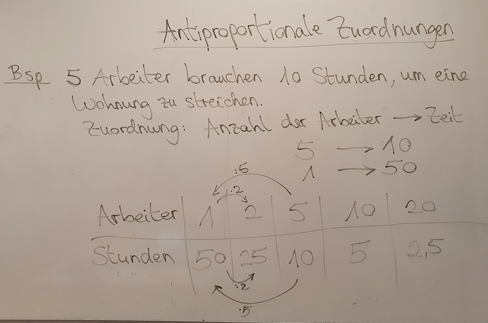
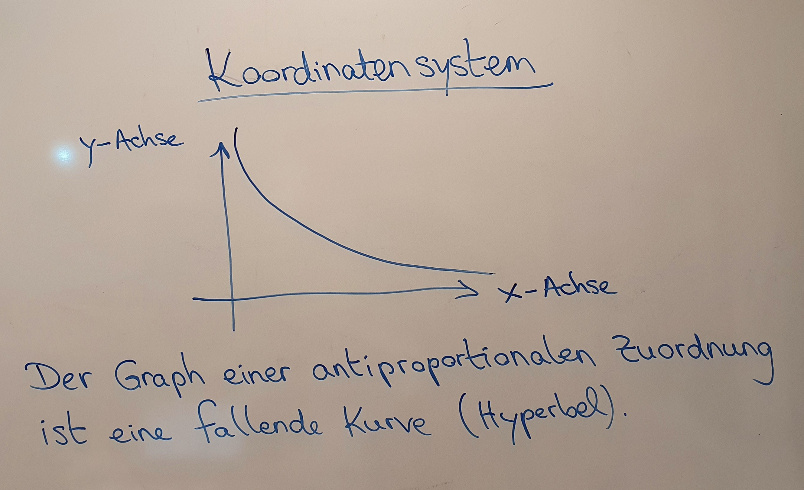
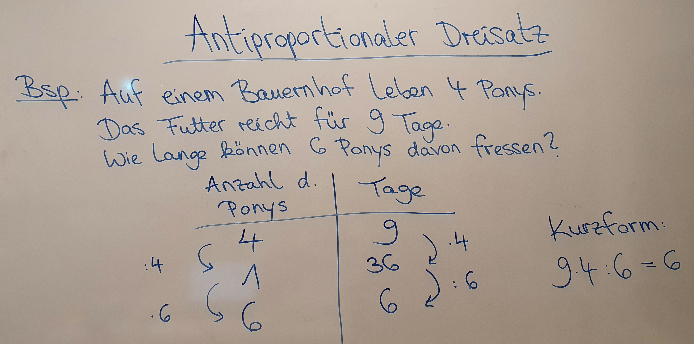
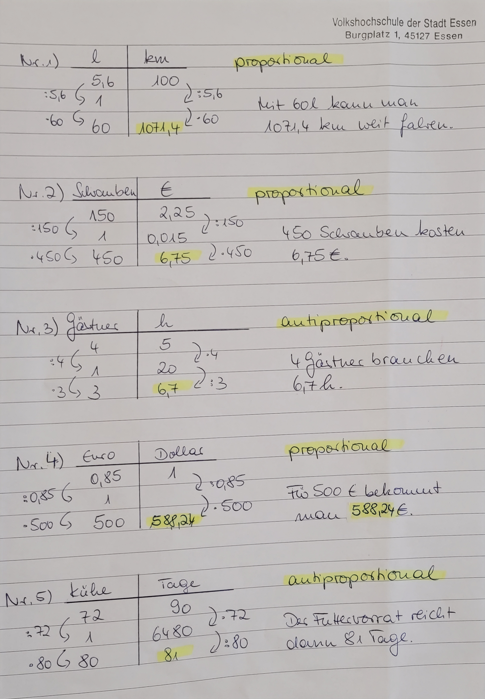
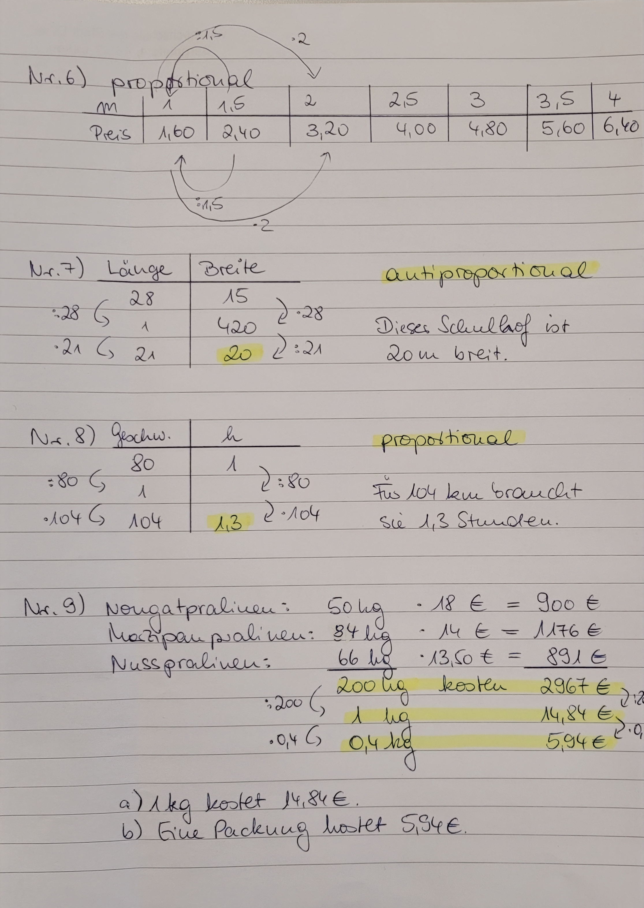

Dreisatz
| Website: | Schulische Weiterbildung & Lernwelt @ VHS Essen |
| Kurs: | 1./2. Fachsemester Turbo 1 Frau Rollhäuser |
| Buch: | Dreisatz |
| Gedruckt von: | Robin Fehlhaber |
| Datum: | Samstag, 19. September 2026, 20:12 |
Inhaltsverzeichnis
- 1. Proportionale Zuordnung
- 2. Proportionale Zuordnung
- 3. Proportionale Zuordnung
- 4. H5P-Aufgabe: Übungsaufgaben zum proportionalen Dreisatz
- 5. Proportionale Zuordnungen
- 6. Dreisatz H5P
- 7. Dreisatz
- 8. Antiproportionale Zuordnung
- 8.1. Tafelbild: Antiproportionale Zuordnungen
- 8.2. Tafelbild: Koordinatensystem
- 8.3. Erklärvideo: Antiproportionaler Dreisatz
- 8.4. Übungen: Antiproportionale Zuordnungen
- 8.5. Tafelbild: Antiproportionaler Dreisatz
- 8.6. Übungen: Antiproportionaler Dreisatz 1
- 8.7. Übungen: Antiproportionaler Dreisatz 2
- 8.8. Übungen: Antiproportionaler Dreisatz 3
- 8.9. Antiproportionale Zuordnung mit dem Dreisatz rechnen
- 8.10. Übungsaufgaben
- 8.11. WWM - Die 32.000-Euro-Frage
- 9. Proportionaler oder antiproportionaler Dreisatz?
- 9.1. Tafelbild: Entscheidungshilfe
- 9.2. Entscheiden Sie: Proportionaler oder antiproportionaler Dreisatz?
- 9.3. LearningApp: Proportional oder antiproportional?
- 9.4. LearningApp: Proportional, antiproportional oder "weder noch"?
- 9.5. Übungen: Antiproportional oder proportional?
- 9.6. Übungen: Antiproportional oder proportional? 2
- 9.7. LearningApp: Berechnen
- 9.8. Quizlet: Antiproportional oder proportional?
- 9.9. Quizlet: Berechnen
- 10. Mischungs- und Verteilungsrechnen
- 11. Gemischte Aufgaben
2. Proportionale Zuordnung
3. Proportionale Zuordnung
4. H5P-Aufgabe: Übungsaufgaben zum proportionalen Dreisatz
5. Proportionale Zuordnungen
Proportionale Zuordnungen
6. Dreisatz H5P
8.1. Tafelbild: Antiproportionale Zuordnungen

8.2. Tafelbild: Koordinatensystem

8.3. Erklärvideo: Antiproportionaler Dreisatz
8.4. Übungen: Antiproportionale Zuordnungen


8.5. Tafelbild: Antiproportionaler Dreisatz

8.6. Übungen: Antiproportionaler Dreisatz 1


8.7. Übungen: Antiproportionaler Dreisatz 2


8.8. Übungen: Antiproportionaler Dreisatz 3


8.10. Übungsaufgaben
Aufgabe 1)
Zwei Bagger heben einen Graben in genau 48 Stunden aus.
Wie lange benötigen drei Bagger?
Aufgabe 2)
Ein Projekt wird von 48 Arbeitskräften in 30 Stunden fertiggestellt.
Wie viele Arbeitskräfte müssen eingesetzt werden, wenn die Arbeit schon nach 12 Stunden erledigt sein soll?
Aufgabe 3)
Für den Einbau einer Solaranlage benötigen 3 Handwerker 8 Tage.
- Wie lange brauchen 4 Handwerker für dem Einbau?
- Wie viele Handwerker werden gebraucht, wenn die Solaranlage in 2 Tagen eingebaut sein soll?
Aufgabe 4)
Ein Schwimmbecken wird von 5 Pumpen in 12 Stunden gefüllt.
- Wie schnell wird das Schwimmbecken gefüllt, wenn 6 Pumpen eingesetzt werden?
- Wie viele Pumpen müssen eingesetzt werden um das Becken in 4 Stunden zu füllen?
Aufgabe 5)
Für die Weizenernte werden 4 Tage lang 9 Mähdrescher eingesetzt.
- Wie lange würden 12 Mähdrescher brauchen?
- Wie viele Mähdrescher werden gebraucht, wenn man für Ernte nur 2 Tage hat?
8.11. WWM - Die 32.000-Euro-Frage

9.1. Tafelbild: Entscheidungshilfe

9.3. LearningApp: Proportional oder antiproportional?
9.4. LearningApp: Proportional, antiproportional oder "weder noch"?
9.5. Übungen: Antiproportional oder proportional?
Aufgabe 1)
500 Blätter Kopierpapier wiegen 2,4 kg.
a) Wie viel wiegen 170 Blatt?
b) Wie viele Blätter wiegen 72 g?
Aufgabe 2)
Zwei Bagger heben einen Graben in genau 48 Stunden aus. Wie lange benötigen fünf Bagger?
Aufgabe 3)
Eine Nachhilfestunde (60 Minuten) bei Frau Q. kostet 25 Euro. Was kosten 80 Minuten Nachhilfe? (Runden Sie auf ganze Cent!)
Aufgabe 4)
Eine Verkäuferin erhielt bei einem Monatsumsatz von 9 360 € zu ihrem Gehalt eine Prämie von 70,20 €. Wie hoch würde die Prämie bei einem Umsatz von 11 120 € sein?
Aufgabe 5)
Der Druck einer Zeitung, die 32 Seiten enthält, dauert 5 Stunden. Die Samstagsausgabe umfasst 48 Seiten. Berechnen Sie, wie lange der Druck der Samstagsausgabe dauern würde, wenn nicht zusätzliche Maschinen eingesetzt werden.
Aufgabe 6)
Nach einer Sturmflut droht ein Deich zu brechen. Zur Sicherung müssen schnell 6000 Sandsäcke gefüllt und aufgeschichtet werden. 20 Helfer haben sich gemeldet und würden 5 Stunden für die Arbeit benötigen. Die Arbeit muss in spätestens 4 Stunden erledigt sein.
Berechnen Sie, wie viele Helfer sich zusätzlich noch melden müssen.
Aufgabe 7)
Während eines Wandertages wollen die Schülerinnen und Schüler einer Klasse Boot fahren. Der Bootsverleiher bietet ihnen 10 Boote für jeweils 3 Personen an, die dann voll besetzt wären. Die Schülerinnen und Schüler wollen aber lieber Boote für 2 Personen. Wie viele Boote benötigen sie dann?
Aufgabe 8)
Ein Supermarkt hat in einer Woche 347 Tüten Milch zu 1,09 € verkauft. Wie viel Tüten Milch zum günstigeren Preis von 0,98 € müsste man verkaufen, um dieselbe Einnahme zu erzielen?
Aufgabe 9)
Anfang 2003 konnte man 29,2 g Gold für 342 € kaufen. Für eine Kette benötigte ein Juwelier 3,78 g Gold. Wie hoch waren die Materialkosten für das verwendete Gold?
Aufgabe 10)
Die Jugendherberge rechnet beim Frühstück für jeden Gast mit 3 Brötchen. Bei einer Gruppe von 28 Schülern kommen nur 21 zum Frühstück. Wie viel Brötchen kann dann jeder essen?
9.6. Übungen: Antiproportional oder proportional? 2


9.7. LearningApp: Berechnen
9.8. Quizlet: Antiproportional oder proportional?
9.9. Quizlet: Berechnen
10. Mischungs- und Verteilungsrechnen
10.1. Tafelbild: Mischungsrechnen - Preise

10.2. Erklärvideo: Mischungsrechnen - Preise
10.4. Übungen: Mischungsrechnen 2


10.5. Erklärvideo: Mischungsrechnen - Anteile
11. Gemischte Aufgaben


11.1. Währungen umrechnen

11.2. noch mehr Übungen
Welche Strecke kann er mit einer Tankfüllung von 60 Litern zurücklegen?
Wie lange brauchen 3 Gärtner?
Wie viel Dollar bekommt man für 500 €?
Der Bauer kauft 8 zusätzliche Kühe. Wie lang reicht dann der Vorrat?
Füllen Sie die folgende Tabelle aus:
| Meter | 1 | 1,5 | 2 | 2,5 | 3 | 3,5 | 4 |
| Preis | 2,40 € |
Aufgabe 7)
Ein Schulhof hat eine Länge von 28 m und eine Breite von 15 m.
Wie breit ist ein Schulhof mit der gleichen Fläche, der nur eine Länge von 21m hat?
Aufgabe 8)
Frau Berns fährt mit dem Auto durchschnittlich 80 km/h.
Wie lange braucht sie für eine 104 km lange Strecke?
Aufgabe 9)
Für eine Pralinenmischung
verwendet Eva 50 kg Nougatpralinen zu 18 € je kg, 84 kg Marzipanpralinen
zu 14 € je kg und 66 kg Nusspralinen zu 13,50 je kg.
a) Wie viel kostet 1 kg der Mischung?
b) Wie viel kostet eine Packung mit 400 g?
Musterlösung:

